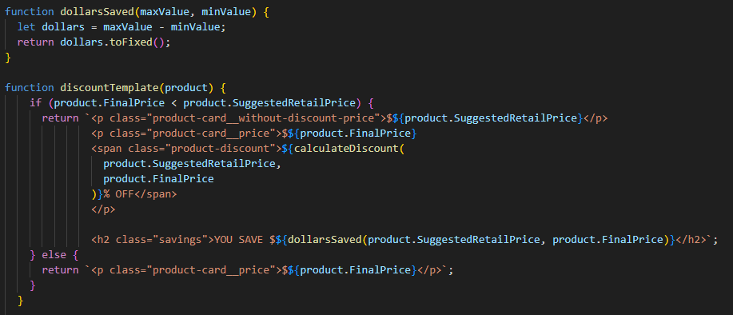

Week 8
Team Activity:
This week for the team activity we were able to change what is shown when the user inputs something incorrectly. it used to say when something went wrong just "bad response" but that doesn't give much detail. so we went back in and changed it to be something to the effect of "invalid experation date" or whatever the user put that was invalid.
Trello Card:
Discount Flag on product detail. I took the amount off and took the price you save and made it show how much you are saving.
Week 8 notes
JSON WEB TOKENS:
json weg tokens (jwt) is a way to transmit information using json objects. it is small and can be sent quickly. it is also self contained, so it doens't need to contact the database more than once. single sign on feature is used by most to since it is small it can be used more efficiently information exchange- using a public and private key pair can be sure the user is who they say they are header.payload.signature
the header has 2 parts of it the alg and typ { 'alg': 'HS256', 'typ': 'JWT', }
Payload: has claims, claims are statements about an entity usually the user 3 claims reserved, public, and private. reserved- set of predefined clames some are issuer, experation time, subject, etc. public- they can be defined at will by those using JWT's and should be defined IANA JWT registry private- custom claims that created to share betwen parties
Signature
how to create a signature HMACSHA256( base64UrlEncode(header) + '.' + base64UrlEncode(payload), secret)
how jwt works: in authentication when the user successfully logs in the jwt returns authorization: bearer token
Post users login -> creates JWT with a secret -> returns JWT to browser -> sends JWT on header -> checks JWT signature -> sends response to client
Why you should use JWT's: JWT compared to simplw web tokens and securtity assertion markup language tokens jwt is easy to use in an internet scale
Auth0: when Auth0 is used it issues a JWT and sends it to the user. jwts are used to authenticate and authorize in Auth0
DEVELOP, DEBUG, LEARN: javascript allows activity in the browser. learn-> develop -> debug
back then the only way to debug was to use an alert and if you got stuck in a loop you would have to shut down the browser or computer. abstractions to use on different browsers
Focus on the end users
our job is to build things for people who will use them
not about us about tech legacy
developers are people too. technology moves fast and when you learn one thing it is something in the past
amazing tech aand nobody is happy
stopped playing with the programs
context switching is exhausting changing from VS code to website to stackoverflow
rethinking tooling prevent us from doing things wrong instead of patching up what we created.
learning as developing and debugging
most of the work is done on local servers
listen to the squiggly lines in the vscode to help not have errors and learn from your mistakes
you can get a preview of the editor itself and see how it works.
open source code is a resource.
editor browser and docs good way to learn.